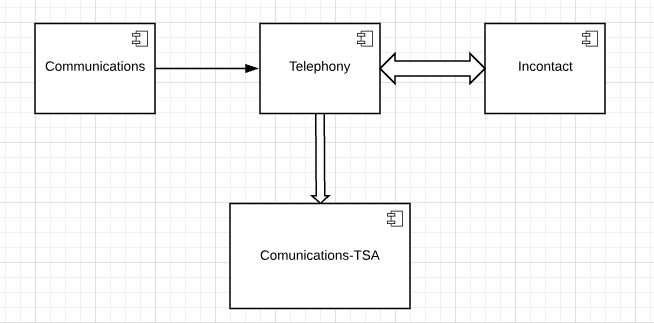
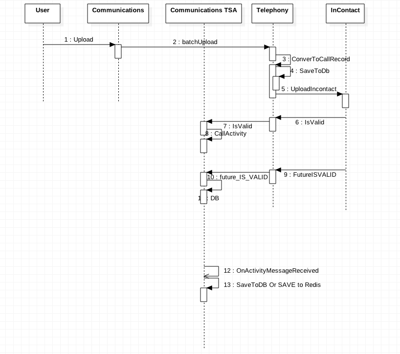

Recent Features
- Alternative Numbers
- Localized Caller ID
- Money IVR Integration
- Outbound Call, Input Funnel
Alternative Numbers
Localized Caller ID
Money IVR Integration
(Integrate InContact with Money Product)
- Balance
- Retrieve Routing Number
- Transaction Details
- Lock card/Unlock Card
- Order a Replacement Card
Outbound Call, Input Funnel
(Making outbound calls to assist with onboarding customers)
- Version 1 - Dealing with Batch Processing in Realtime
- Version 2 - Eliminate Batch Processing
Version 1
- Batch Delay -> Realtime
- New Service: TSA (PrechecK)
- Integration with Telephony
- Integration with Activites
- Integration with Communications
Version 2
Outbound Funnel Design
Component diagram

Outbound Funnel Design
Sequence diagram
